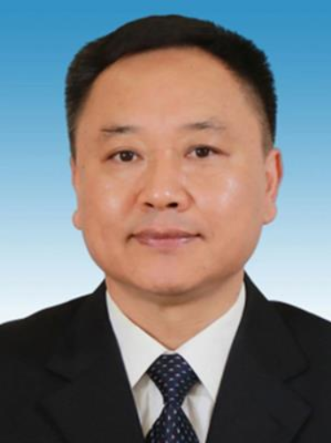
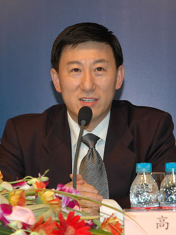
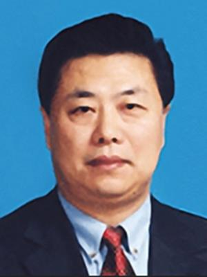
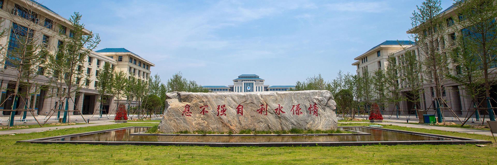
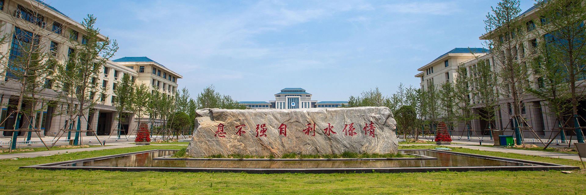
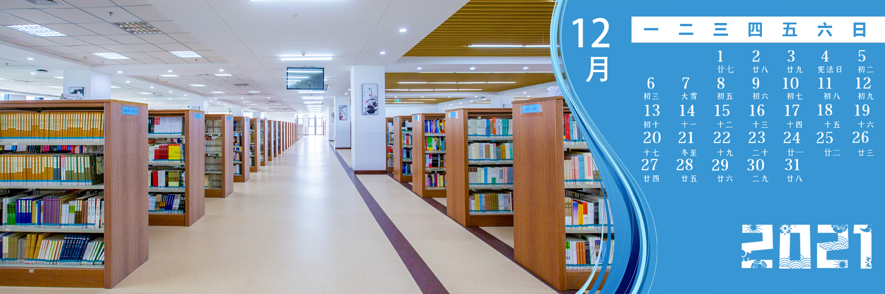
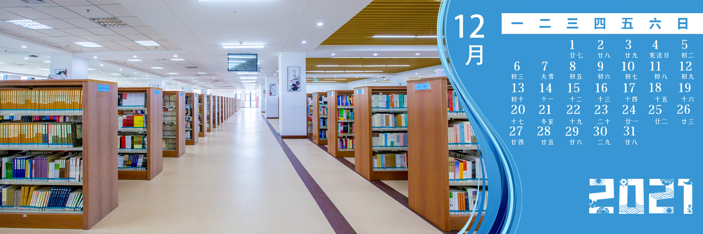

李国英
男，汉族，1963年12月生，河南禹州人
1984年7月参加工作，1988年8月加入中国共产党，在职研究生学历，
理学博士学位，教授级高级工程师。现任水利部党组书记，部长。
 陈雷
陈雷
男，汉族，1954年6月生，北京人
11980年5月加入中国共产党，1971年9月参加工作，本科毕业于东北工学院，研究生毕业于华北
水利水电学院北京研究生部农田水利工程专业，研究生学历，工学硕士，教授级高级工程师。
现任十三届全国政协农业和农村委员会副主任。

高波
男，汉族，1964年10月3日出生
山东平度人，中共党员，1984年8月参加工作，研究生学历，工学硕士，
教授级高级工程师。现任第十三届全国政协副秘书长、机关党组成员。

鄂竟平
男，汉族，1956年1月生，河北乐亭人
1977年1月加入中国共产党，1973年2月参加工作，华北水利水电学院
水工专业大学毕业，教授级高级工程师。现任：全国政协人口资源环境委员会副主任。
结束语
从北京水利学校到今天的华北水利水电大学，七十年过去了，学校以培育英才、繁荣学术、发展进步文化和推动社会进步为己任，
遵循勤奋严谨、求实创新的校训，树立科学发展观，坚持可持续发展和自主创新，坚持质量、规模、效益并重，坚持“从严治校、从严执教”，
情系水利，化育栋梁，煅出一代代打鼎撑天的百炼之钢。七十年峥嵘岁月，华北水利水电大学如东方朝暾，曙光初绽。华水人将在百舸争流、
千帆竞渡的时代潮流中，高歌猛进，奋力远航。


 

 
